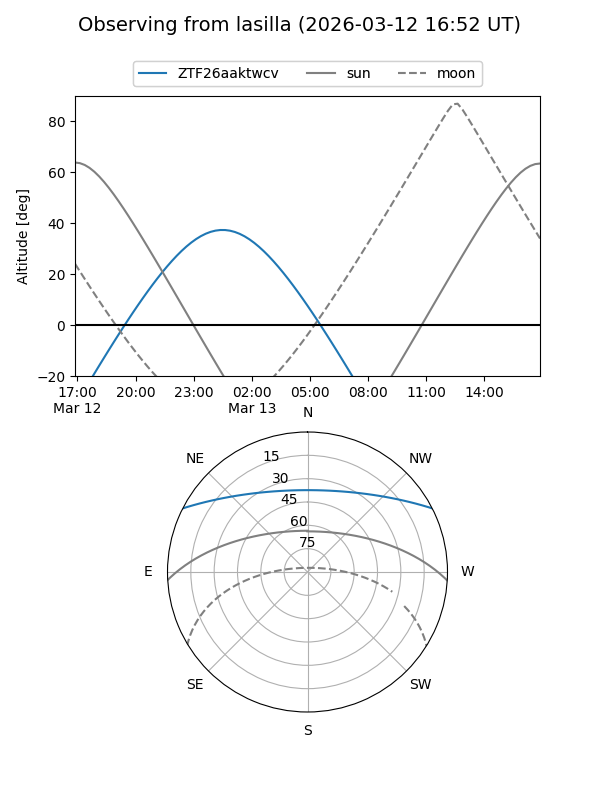
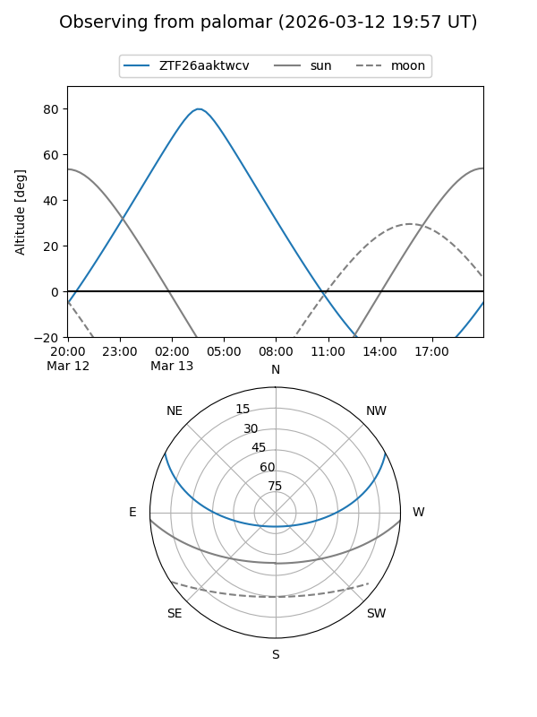

ZTF26aaktwcv
Target ZTF26aaktwcv at 2026-03-13 04:14
Aliases and brokers:
FINK: link
Lasair: link
ALeRCE: link
alt names
ZTF26aaktwcv (ztf,fink_ztf)
Coordinates:
equatorial (ra, dec) = 106.8822,+23.40455
equatorial (HMS+DMS) = 07:07:31.73,+23:24:16.40
galactic (l, b) = (193.4329,+13.79356)
Flags:
Photometry:
last ztfg=17.87
1 ztfg detections
Lightcurve
Visibility


Additional plots